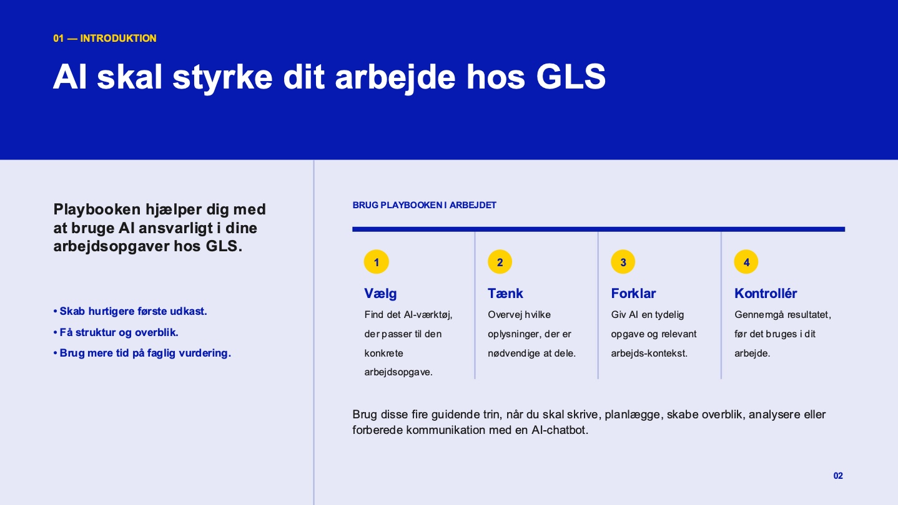

01 ai playbook for gls 01
- client
- gls
- type
- employee guide · slideshow
- team
- solo
- year
- 2026
the brief
gls employees were unsure how to use ai safely, missed concrete examples and doubted its value. i made an 11-slide playbook that shows what ai can help with, when to stop and think about data, and how to check the result before using it.

what i did
i put the material in a clear order: tools, data security, human control, prompts and quality checks. each topic got the slide format that explains it fastest, like a comparison for choosing tools and a flow for human control. gls' own blue and yellow, logo and finn and ally illustrations make it read as real internal material.
what i learned
information hierarchy matters most when the reader is busy. i used ai myself to brainstorm slide types and learned that clear context and limits make it far more useful, but choosing and adapting stays my job.